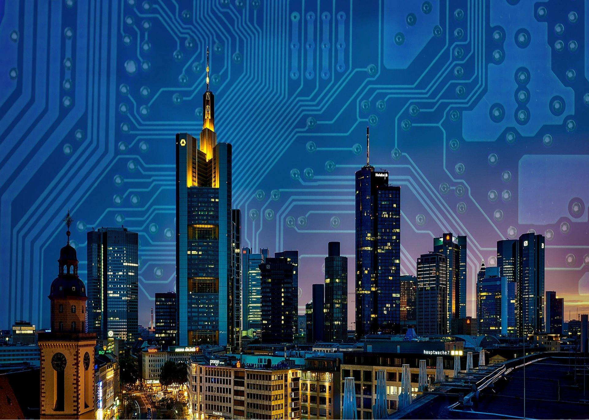

Поліпшення якості нашого життя безпосередньо пов'язане із новітніми інноваційними технологіями. Стосується це і міської інфраструктури, яку влада постійно вдосконалює. І, «розумне місто» - це відмінний формат, покликаний забезпечувати керування іта взаємодію держави із суспільством, гарантує високу якість життя населення та ефективну роботу всіх задіяних для цього служб.
Безумовно, проектувальник зі створення інфраструктури «розумного міста» в світлі такого підходу до облаштування міста виявиться в найближчому майбутньому найбільш затребуваною і перспективної професією на ринку праці. Управління, економіка, фінанси, технології, середа, жителі, інфраструктура із додаванням поняття «розумні» - найбільш показові особливості для Smart City.
Яскравим прикладом розумного міста є Сінгапур. Інформаційно-комунікаційні технології острівного міста-держави - найвищого рівня. Величезна кількість камер і сенсорів розміщені по всьому місту, а сигнали, які постійно надходять від них - дозволяють стежити за всім, що відбувається в місті. Органи правопорядку відстежують не тільки злочини, порушення громадського порядку, але навіть фіксують викид сміття в недозволених місцях та куріння в місцях, не призначених для цього.
Державна система трафік-контролю, яка використовує датчики і хмарні сервіси інформує користувачів про графік руху автобусів, наявність вільних місць та доступність таксі.
Зв'язати воєдино взаємодію комунікативних та інформаційних технологій, тим самим поліпшити рівень життя населення і управління внутрішніми процесами в місті - основна мета і завдання такого фахівця.
Спеціальність до того ж дуже цікава, оскільки в режимі онлайн надається унікальна можливість бачити всі процеси в місті, приймати своєчасні рішення та правильно розподіляти наявні ресурси.
Повернутися на головну сторінку
Автор: Ромець Карина